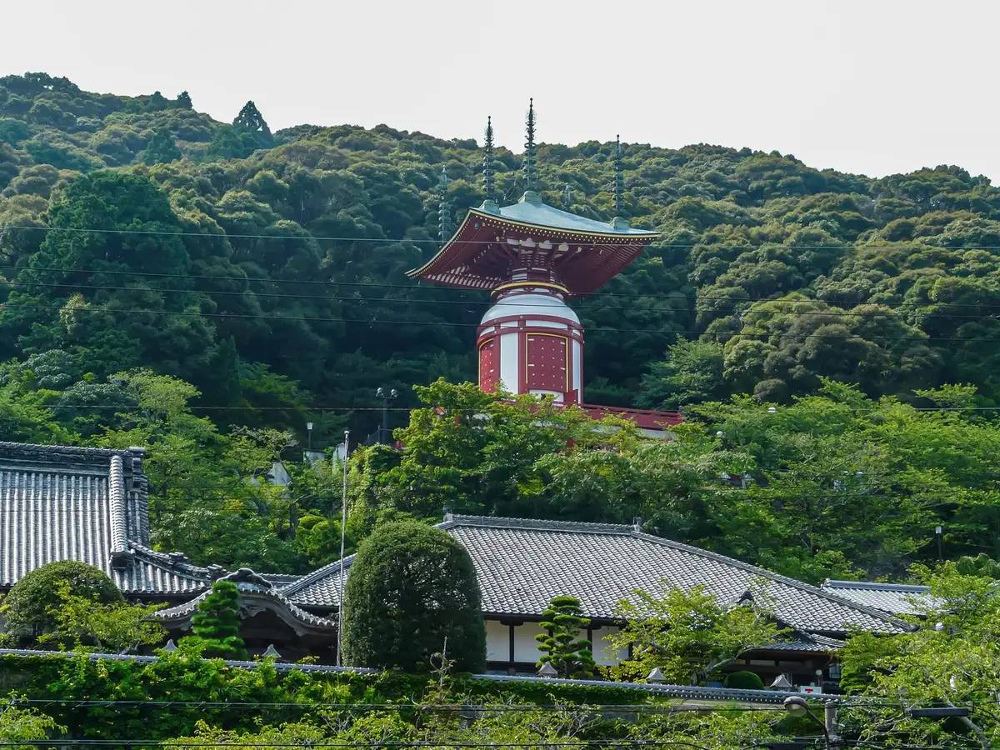
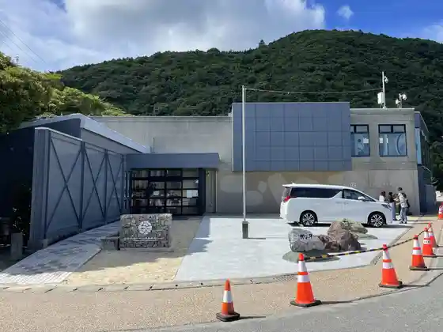
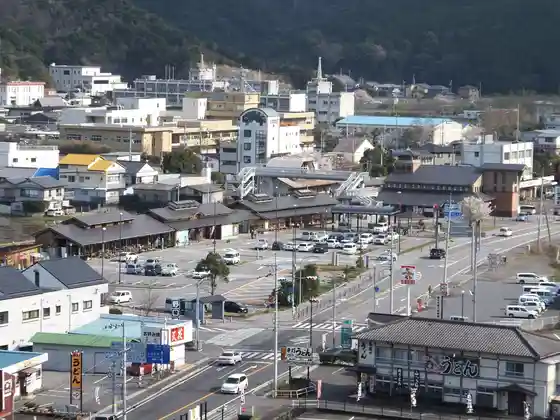
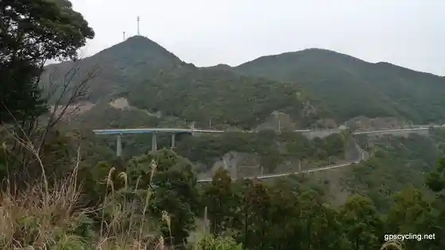
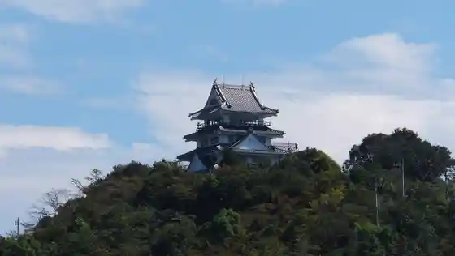

Japan / Tokushima / Minami Town
Minami Town
Minami Town · Tokushima
Minami Town
Highlighted on the Tokushima map.

Sights
Yakuo Tera Yu Gi to
Hiwasa Umigame Museum Karetta

Roadside Station Hiwasa

Minami Awa San Line

Hiwasa Shiro

Ebisu Hama Kyanpu Village
Hiwasa Lighthouse
Poppo Marin